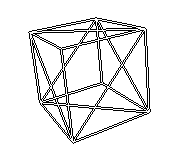

If you google how to generate vertices and tris of a cube the tutorials that come up probably teach you put in the code matrices with constant values which are actually the three dimensional coordinates of the vertices and the indices of the vertices in the array.
For example this is the first explaination that comes up if I google how to generate cube's vertices and tris, and all the other relevant results say the same thing. Hard coding constant values, even if fast, isn't too elegant. So this is what I came up with.
How can I dispose the vertices in a way that they are generetable? Well, we have 8 vertices, and every vertices has three dimensions. If we take the center of the cube as absolute zero (x: 0, y: 0, z: 0) all the vertices of the cube will have for each dimension or size / 2 or -size / 2. So, every vert has 3 values and each one can have one of 2 values, the number of possble verts is 23 which is 8, so to get the verts we need to generate are actually all the combinations possible. to do that, there is a counter that goes from 0 to 7 in binary, with the most relevant bit being X, the least relevant Z and the middle Y:
000, 001, 010, 011, 100, 101, 110, 111
By replacing the 0 with size / 2 and the 1 with -size / 2 we end up with the vertices that we need.
This is the C# code that generates that
// verts was defined previously
// size and startPos are the parameters of the function
// Coord3 is my class for 3 dimensional point
int l = size / 2;
verts = new Coord3[8];
for (int i = 0; i < 8; i++) {
verts[i] = new Coord3(
(i & 4) != 0 ? l : -l,
(i & 2) != 0 ? l : -l,
(i & 1) != 0 ? l : -l) + startPos;
}
This means that the index of a vertex is also its position, which will come really helpful.
We need to slice the quads of the cube into tris, and the first solution to do that is probably to slice 4 faces in the same direction and the other two in a way or another. This is pretty irregular and still not elegant to generate. Instead we can use the slices made by using two equilateral triangles.

This cube opened in a T shape looks like this:
|---|---|---|
| \ | \ | / |
|---|---|---|
| \ |
|---|
| / |
|---|
| / |
|---|
Three faces that make one of the triangles are the three faces with positive axis, and the other triangle has the the other three faces with negative faces. (capital letter means positive)
|---|---|---|
| Z | x | z |
|---|---|---|
| Y |
|---|
| X |
|---|
| y |
|---|
and the indices of the vertices are
2---6---7---3
| Z | x | z |
0---4---5---1
| Y |
0---1
| X |
2---3
| y |
6---7
The faces are now sliced, but there needs to be an order for the tris, and for every tris, an order for the vertices, so I came up with this:
start // 6 faces, 12 tris
starting from positive triangle // 3 faces, 6 tris
starting from x axis // 1 face, 2 tris
the tris inside the triangle // 1 tris, 3 vertices
the 90° vertex
continuing clockwise
the other tris on the same face
y axis
z axis
negative triangle
end
Doing this by hand led to this:
X 012 321
Y 041 514
Z 024 642
x 756 465
y 763 236
z 735 153
The first thing to note, is that the negative faces are just the positive faces but with a bitwise not operator applied and the 2nd and 3rd vertices swapped.
Example:
X 012 (000, 001, 010); 321 (011, 010, 001)
x 756 (111, 101, 110); 465 (100, 110, 101)
We can remove the negative faces from the list and for all the vertices remaining, we add another vertex which is (~v.x, ~v.z, ~v.y).
We are left with 6 constant tris:
X 012 321
Y 041 512
Z 024 642
As you may notice, the second tris of a face has for X the sum of Y and Z of the other tris in the same face, and Z and Y are the same, but inverted (v.y + v.z, v.z, v.y).
So now the ones that are left are
X 012
Z 024
Y 041
which in binary are
X 000, 001, 010
Z 000, 010, 100
Y 000, 100, 001
So to calculate even these three tris we can run a counter that goes from 0 to 2, (number of dimensions - 1), and for the X just put 0, for the Y 1 << counter, and for the Z, Y << 1, but when it reaches 8, it loops back to 1.
All this code is C# is:
Coord3[] verts;
Tris[] tris;
public CubeShape(Coord3 startPos, int size) {
int l = size / 2;
verts = new Coord3[8];
// generating verts
for (int i = 0; i < 8; i++) { // with a counter from 0 to 7
verts[i] = new Coord3(
(i & 4) != 0 ? l : -l, // x is the most relevant bit
(i & 2) != 0 ? l : -l, // y is the middle one
(i & 1) != 0 ? l : -l) // z is the least relevant
+ startPos; // offset of the cube
}
// this is here just because AddRange doesn't use params
void AddTris(params int[] a) => inds.AddRange(a);
for (int i = 0; i < 3; i++) {
int v1 = 1 << i, v2 = v1 == 4 ? 1 : v1 << 1;
AddTris(0, v1, v2); // add the 3 initial tris with bitwise left shift
}
// v0 is the sum of the two. inverted v2 and v1 for clockwise.
int c = inds.Count;
for (int i = 0; i < c; i += 3) // loops the 3 tris just made
AddTris(inds[i + 1] + inds[i + 2], inds[i + 2], inds[i + 1]);
// all of the v's are bitwise not'd. inverted v2 and v1 for clockwise.
c = inds.Count;
for (int i = 0; i < c; i += 3) // loops the 6 tris just made
AddTris(7 - inds[i], 7 - inds[i + 2], 7 - inds[i + 1]);
}
This snippet was updated the February 6th 2021, which is the reason why it's different from the one you might have seen on Stack Overflow.
NOTE:
This solution isn't really helpful for anyone, it is slower than just writing down the constant values and pretty unclear at first glance. Looking back at it, it is not even too elegant. But this was a fun little piece of code that I wrote in about 2-3 hours (and then some more in 2021, lol), and wanted to share it, since I couldnt find anything like this on the Internet.
More of my stuff
Article by Catonif in 2020 and edited in 2021
Mail me at catonif.dev@gmail.com
Page's theme: Monokai Classic